Six moves: progressive-align by guide tree, refine iteratively, build the tree (NJ → ML), date with the relaxed clock, test selection via dN/dS, read synteny + RNA structure.
Learning objectives
- Formulate the MSA problem; explain why exact tensor DP is intractable beyond ~5 sequences and why progressive alignment is the practical compromise.
- Walk through progressive alignment with a guide tree; explain Feng-Doolittle "once a gap, always a gap" and its iterative-refinement remedy.
- Construct phylogenetic trees by parsimony, distance methods (UPGMA, NJ), and maximum likelihood; describe the molecular-clock assumption and its violation.
- Compute and interpret dN / dS ratios; identify positive vs purifying selection at the gene level.
- Describe synteny, ortholog identification (RBH, OrthoFinder), and paralog distinction; navigate UCSC Genome Browser and Ensembl Compara.
- Apply Infernal and Rfam to non-coding RNA family detection via stochastic context-free grammars.
- Frame phylogenetics and MSA in EE terms: trees as graphical models; MSA as constrained DP; molecular clock as a Poisson process; dN/dS as a likelihood-ratio test; RNA folding as context-free parsing.
Part 1 · 25 min From Pairwise to Multiple
1.1 Why MSA matters
Pairwise alignment (Lecture 2) handles two sequences. But biology routinely deals with families: a gene family across 50 species, all isoforms of a protein, or all members of a Pfam domain. To compare these, we need multiple sequences aligned in a single coherent column structure where homologous residues line up.
Concrete uses:
- Phylogenetics: trees are inferred from MSAs.
- Profile HMMs / Pfam: column-by-column residue conservation gives a profile.
- AlphaFold: MSA columns provide coevolution signals.
- Conserved-region detection: identifies functionally-important residues.
- Primer design: degenerate primers cover all family members.
1.2 The MSA problem
Given $N$ sequences of average length $L$, find the alignment with maximum sum-of-pairs (SP) score:
$\text{SP} = \sum_{i < j} \text{score}(\text{aln}_i, \text{aln}_j)$
Each pair's contribution is the standard pairwise score; the goal is jointly optimal placement of gaps so all pairs simultaneously score well.
1.3 Why exact DP is impossible
Pairwise DP runs in $O(L^2)$ time. The natural generalization to $N$ sequences runs in $O(L^N)$ time and space — the Carrillo-Lipman tensor. For $N = 5$ and $L = 300$, that's $\sim 10^{12}$ states. For $N = 50$ (a small family), it's $10^{125}$. NP-hard in general (Wang & Jiang 1994).
So all practical MSA tools are heuristic.
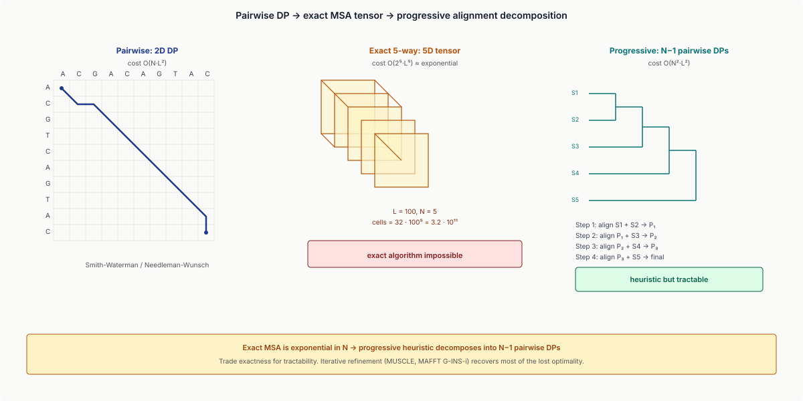
1.4 The Carrillo-Lipman bound
Carrillo & Lipman (1988): a partial bound that lets exact DP run for small $N$ and short $L$. The idea: prune branches of the DP tensor that can't beat the current best. Useful for $N \leq 5$ or so. Not used at scale; mentioned because it tells you exact MSA isn't entirely impossible — just unscalable.
1.5 The progressive-alignment idea
Feng & Doolittle (1987): instead of optimizing all sequences jointly, align them in tree order:
- Build a guide tree from rough pairwise distances.
- Align the two closest sequences first.
- At each internal node, align the profile built from previously-aligned sequences with the next sequence.
- End with one alignment of all $N$ sequences.
This is suboptimal: errors made early are frozen ("once a gap, always a gap"). But it's tractable (close to $O(N^2 L^2)$) and works well in practice.
Part 2 · 40 min Progressive Alignment in Practice
2.1 The Clustal family
ClustalW (1994), ClustalX (1997), Clustal Omega (2011). The progenitors of progressive alignment, still widely used.
- Compute all pairwise distances (typically by k-tuple-counting, fast but rough).
- Build a guide tree (UPGMA or NJ).
- Progressive alignment along the tree.
Limitation: the guide tree has to be built before any alignment is done, but the distance estimates from raw sequences can be inaccurate at distant homology.
2.2 MUSCLE: iterative refinement
MUSCLE (Edgar 2004) added two key innovations:
- Better guide tree: MUSCLE iterates — build a quick alignment, derive distances from the alignment, build a new tree, re-align.
- Iterative refinement: after the initial alignment, bipartition the tree at a random internal edge; re-align the two halves separately, then combine. If the SP score improves, accept; else reject. Repeat ~20 iterations.
Iterative refinement breaks the "once a gap, always a gap" lock-in by giving early errors a chance to be corrected later.
2.3 MAFFT: FFT-based scoring
MAFFT (Katoh et al. 2002, 2013) is the modern default for large MSAs:
- For pairwise comparisons, uses fast Fourier transform (FFT) on physicochemical-property representations of residues. Approximates the distance computation in $O(L \log L)$ rather than $O(L^2)$.
- Multiple algorithm choices: FFT-NS-1 (fast), FFT-NS-2 (balanced), L-INS-i (most accurate, uses local pairwise alignments as anchors), G-INS-i (global).
- Scales to thousands of sequences.
For typical workflows: MAFFT L-INS-i is the gold standard; FFT-NS-2 the practical default.
2.4 The MSA quality landscape
Benchmarks (BAliBASE, PREFAB, OXBench, HOMSTRAD) compare MSA tools:
- MAFFT L-INS-i and PROBCONS: highest accuracy, slower.
- MUSCLE, Clustal Omega: balanced.
- Kalign: fast for large datasets.
Differences are most visible at distant homology (~25% identity). Closely-related sequences are well-aligned by any tool.
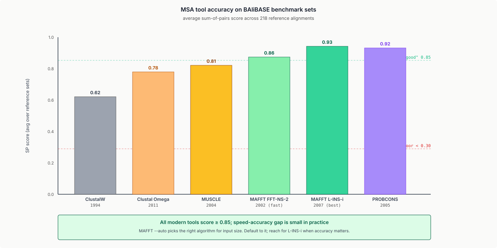
2.5 The deep dive
Part 3 · 40 min Phylogenetic Tree Construction
3.1 What's a phylogenetic tree
A phylogenetic tree is a rooted (or unrooted) bifurcating tree where:
- Leaves = observed sequences (taxa).
- Internal nodes = inferred ancestors.
- Edges = lineages with associated lengths (proportional to evolutionary distance).
- Root = most-recent common ancestor (MRCA).
Building such trees from sequence data is the core of evolutionary inference.
3.2 The data: distance, character, and likelihood
Three flavours of phylogenetics:
- Distance methods: compute a pairwise distance matrix from the MSA, then tree-build from distances. UPGMA, Neighbor-Joining.
- Character / parsimony methods: count substitutions; minimise total changes on the tree. Maximum parsimony.
- Likelihood methods: probabilistic substitution model, find tree maximising P(data | tree).
Modern phylogenetics is dominated by likelihood and Bayesian methods (the latter outside scope here).
3.3 UPGMA
UPGMA (Unweighted Pair Group Method with Arithmetic Mean): hierarchical clustering on a distance matrix.
- Find the closest pair of taxa.
- Merge them into a new internal node; new branch length = distance / 2.
- Update the distance matrix.
- Repeat until one node remains.
Assumption: molecular clock — substitution rates are equal across all lineages. When this fails (it usually does), UPGMA produces incorrect topologies. Use it only as a quick first pass.
3.4 Neighbor-Joining
Neighbor-Joining (Saitou & Nei 1987): a distance method that doesn't assume the molecular clock.
For each pair $(i, j)$, compute:
$Q(i, j) = (n - 2) d(i, j) - \sum_k d(i, k) - \sum_k d(j, k)$
The pair minimising $Q$ is the next pair to join. NJ produces an additive tree if input distances are additive; otherwise it's a robust heuristic.
NJ is fast ($O(n^3)$) and accurate for moderate datasets. Standard for "quick tree from MSA" tasks.
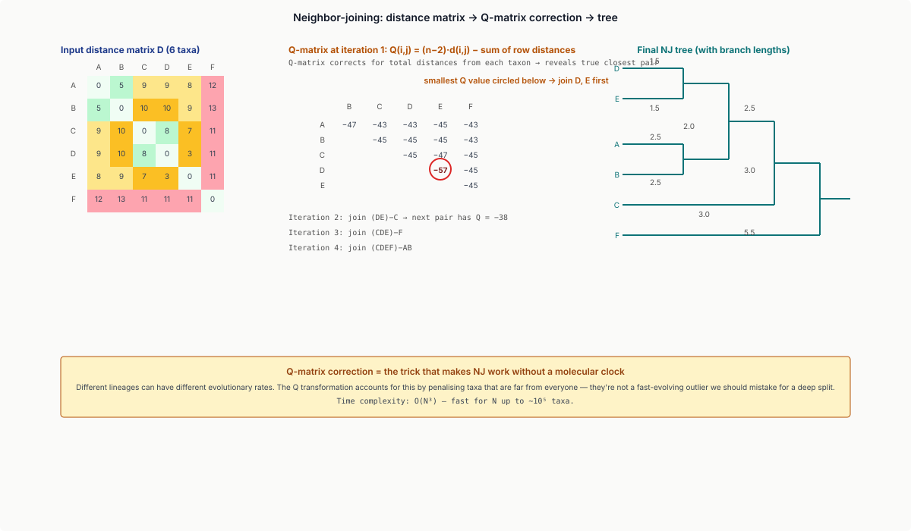
3.5 Maximum parsimony
Count the minimum number of substitutions required to explain the data on the tree.
- Brute force: enumerate all $(2n-3)!! / 2^{n-1}$ unrooted topologies; for each, compute parsimony score using Fitch's or Sankoff's algorithm.
- Heuristics: nearest-neighbour interchange, subtree-pruning-and-regrafting.
Limitation: long-branch attraction. Two distantly-related sequences with high substitution rates appear closer to each other than to their true relatives. Parsimony is biased; ML and Bayesian methods are unbiased.
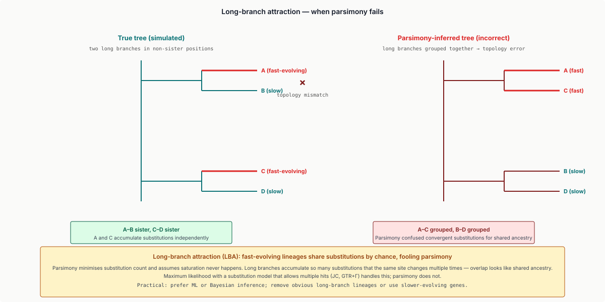
3.6 Maximum likelihood
Fix a substitution model (Jukes-Cantor, K2P, F81, HKY, GTR; protein analogs JTT, WAG, LG); then for each candidate tree compute:
$L(\text{tree}) = P(\text{data} \mid \text{tree}, \text{model})$
Use Felsenstein's pruning algorithm: dynamic-programming over the tree to compute leaf likelihoods bottom-up.
Search the tree space with hill-climbing (RAxML, IQ-TREE, FastTree). Modern likelihood-tree software produces gold-standard trees in minutes for thousands of sequences.
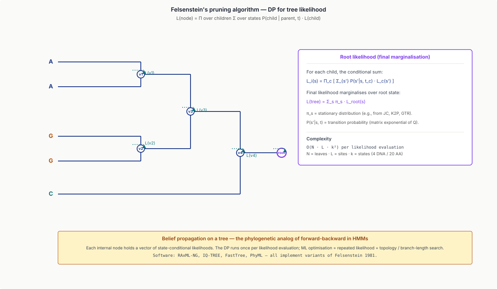
3.7 Branch support: bootstrapping
How confident are we in each branch? Bootstrap: resample MSA columns with replacement → rebuild tree → repeat 100-1000 times → record what fraction of bootstrap trees contain each branch of the original tree. Branches with bootstrap support $\geq 70$ are typically considered reliable.
Part 4 · 25 min Molecular Clock and Dating
4.1 The clock concept
The molecular clock hypothesis (Zuckerkandl & Pauling 1962): substitutions accumulate at a roughly constant rate per unit time. If true, distance ∝ time: branch lengths are time elapsed since divergence.
Calibrated against fossil records or known divergence times, branch lengths translate to absolute dates.
4.2 The clock as a Poisson process
Substitutions on a lineage are well-modelled as a Poisson process: substitution count $X(t) \sim \text{Pois}(\mu t)$ where $\mu$ is the per-site rate. Variance equals mean — overdispersion suggests rate variation across sites.
Per-site rate variation: model as Gamma distribution → site-specific rates → Felsenstein's "+G" correction (gamma-distributed rates, often discretised to 4-8 categories).
4.3 Clock violations and the relaxed clock
The strict clock fails: substitution rates vary across lineages (e.g., rodents > primates), across genes, and across sites. Relaxed clock models (BEAST, MrBayes) allow rates to vary along the tree, with rate priors (uncorrelated lognormal, autocorrelated, etc.).
4.4 Calibration and dating
To convert relative branch lengths to absolute times, anchor with calibration points: dated fossils or known divergence events. Combined with the relaxed clock, this gives divergence-time estimation with credible intervals.
Example: estimating when SARS-CoV-2 emerged from a bat coronavirus ancestor (~ Oct/Nov 2019, with confidence intervals from 2015 to 2020).
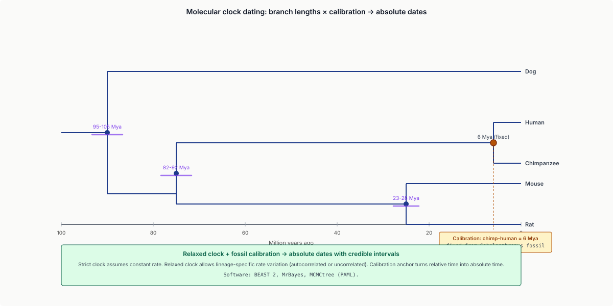
Part 5 · 25 min dN/dS and Selection
5.1 The codon-level view
The genetic code is degenerate: most amino acids have multiple codons. Synonymous substitutions (codon change without amino-acid change) are evolutionarily near-neutral. Non-synonymous substitutions (codon change with amino-acid change) are subject to selection.
- $dS$ = synonymous substitutions per synonymous site.
- $dN$ = non-synonymous substitutions per non-synonymous site.
The dN / dS ratio $\omega = dN / dS$ measures selection:
- $\omega = 1$: neutral evolution.
- $\omega < 1$: purifying (negative) selection — most genes most of the time.
- $\omega > 1$: positive (Darwinian) selection — adaptive evolution.
5.2 Computing dN and dS
Algorithms:
- Nei-Gojobori (1986): simple counting; assumes equal mutation rates across codons.
- Yang & Nielsen (2000): maximum-likelihood-based; codon-substitution model with unequal rates.
- Codeml (PAML package): standard ML implementation.
Practical: align coding sequences (always nucleotide alignment, codon-aware), run codeml, get per-gene $\omega$.
5.3 The likelihood-ratio test
Two models:
- Null: $\omega$ is the same across all sites and lineages (clock-like).
- Alternative: $\omega$ varies — some sites have $\omega > 1$ (positive selection); others $\omega \ll 1$ (purifying).
Likelihood-ratio test: $2(\log L_{\text{alt}} - \log L_{\text{null}}) \sim \chi^2_{df}$. If significant → some sites under positive selection.
5.4 Examples
Genes under positive selection (omega > 1 at specific sites):
- Influenza HA: surface protein evolves to evade antibodies. Annual updates to vaccine targets reflect this.
- MHC: peptide-binding groove residues are highly variable.
- Sperm-egg interaction proteins: Bindin, ZP3 — diverging fast across species.
Genes under strong purifying selection ($\omega \ll 1$):
- Histones: virtually identical across all eukaryotes.
- Ribosomal RNA: similar story.
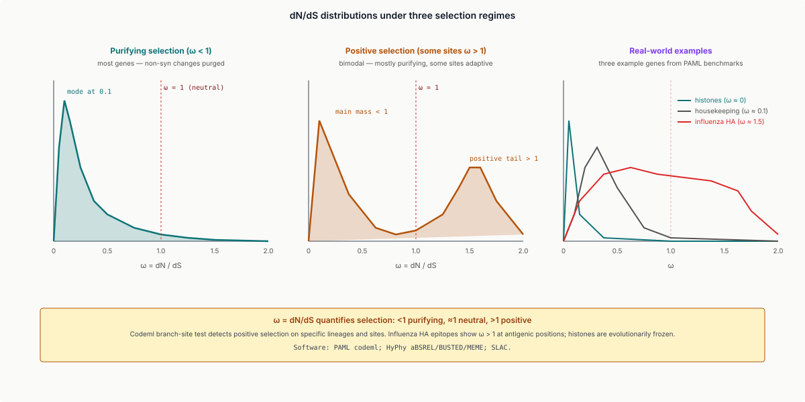
Part 6 · 25 min Comparative Genomics and Synteny
6.1 Genome-scale comparison
Beyond single-gene comparisons, comparative genomics asks: how are whole genomes related?
Resources:
- UCSC Genome Browser: aligned genomes side-by-side.
- Ensembl Compara: pairwise genome alignments + synteny + ortholog assignments.
- OrthoDB / OMA: pre-computed ortholog clusters across all sequenced species.
6.2 Synteny
Synteny = preserved gene order / co-linearity between genomes. Conserved synteny blocks are a hallmark of common ancestry.
Detection: align two genomes; identify regions where homologous genes appear in the same order. Disrupted synteny = chromosomal rearrangement, inversion, translocation since divergence.
Synteny visualisation: dot plots (genome 1 on x-axis, genome 2 on y-axis, dots at homolog pairs). Diagonal stripes = collinear blocks. Off-diagonals = rearrangements.
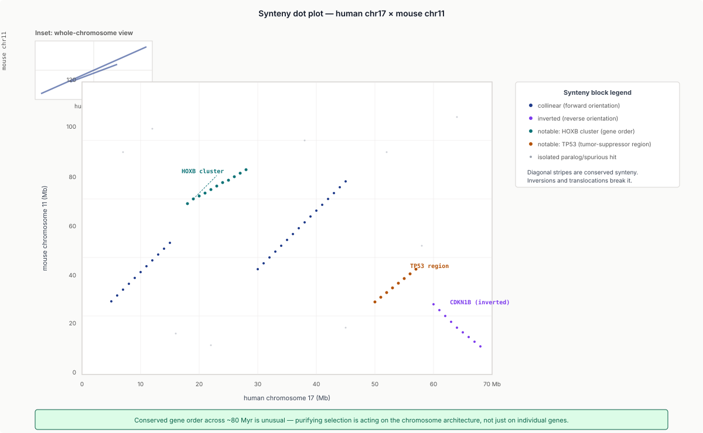
6.3 Orthologs vs paralogs
- Orthologs: genes in different species sharing a common ancestor through speciation. "Same gene in different species."
- Paralogs: genes in the same species (or different species) arising from gene duplication. "Different gene from the same family."
Distinguishing them is hard for gene families with both speciation and duplication events.
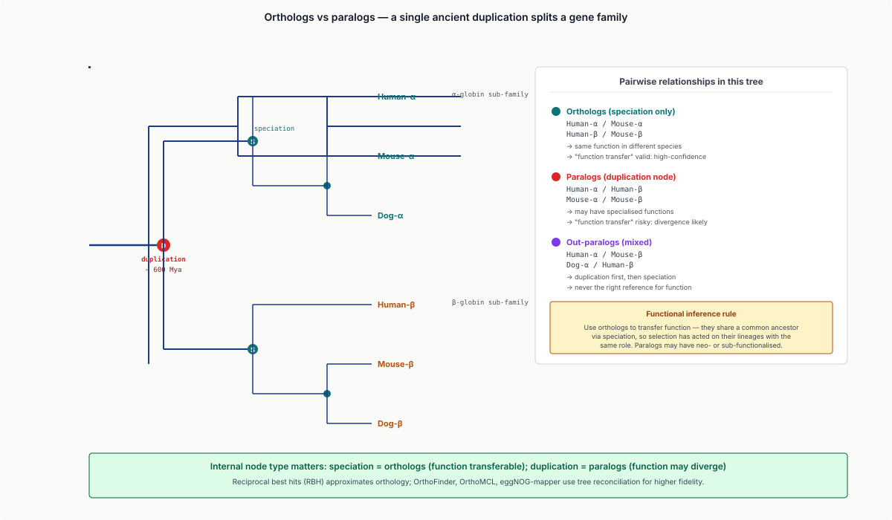
Tools:
- RBH (Reciprocal Best Hits): simple, ~80% accurate. (Touched in L19 / new L3.)
- OrthoFinder: clustering-based; handles complex cases better.
- OMA / OrthoDB: pre-computed databases.
6.4 Conservation tracks
UCSC's PhyloP and PhastCons tracks: per-base scores measuring evolutionary conservation across vertebrates (or other clades). High conservation = likely functional sites under purifying selection.
Used for:
- Variant prioritisation in clinical genomics.
- Functional element discovery in non-coding DNA (regulatory regions, miRNA target sites).
- Comparative regulatory genomics.
6.5 Phylogenetic footprinting
If a non-coding region is highly conserved across mammals, it's likely a regulatory element. The technique phylogenetic footprinting uses cross-species conservation to identify transcription factor binding sites without ChIP-seq.
Modern workflows combine:
- ChIP-seq (L9) for empirical binding.
- Conservation tracks for evolutionary support.
- Motif-scanning (HOMER, FIMO) for sequence specificity.
The intersection is the highest-confidence regulatory inventory.
Part 6.5 · 25 min RNA Secondary Structure and Non-Coding RNAs
6.5.1 Why RNA structure matters
Most of this lecture has assumed sequences are interpreted at the residue level — letters compared, columns aligned, trees built. But RNA molecules fold into 3D structures stabilised by base-pairing, and their function depends on that structure as much as on their sequence. Examples:
- tRNA — folds into the cloverleaf required for ribosome recognition.
- rRNA — the ribosome itself is a structured RNA-protein machine.
- Riboswitches — bacterial mRNA elements that change conformation in response to ligand binding.
- miRNAs — ~22-nt regulatory RNAs whose precursor stem-loop structure drives Dicer processing.
- lncRNAs — long non-coding RNAs (XIST, HOTAIR, NEAT1) function via specific structural domains.
For non-coding RNA family detection, alignment alone is not enough — you need structure-aware alignment.
6.5.2 RNA folding basics
Watson-Crick base pairs (A·U, G·C) and the wobble pair (G·U) drive RNA secondary-structure formation. The space of foldings is constrained by:
- No pseudoknots in classical RNA folding (most algorithms ignore them; pseudoknots make folding NP-hard).
- Minimum free energy (MFE): the most stable fold under thermodynamic energy parameters (Turner free energies).
- Pair probabilities: under the Boltzmann ensemble, each pair has a probability — useful for reliability assessment.
The MFE structure is computed by Zuker's algorithm (1989): O(n³) dynamic programming on the sequence with the energy parameters.
6.5.3 ViennaRNA and RNAfold
ViennaRNA (Lorenz et al. 2011) is the standard RNA-folding suite:
RNAfold: minimum-free-energy structure + base-pair probabilities.RNAcofold: heterodimer folding (e.g., miRNA + target).RNAplfold: local folding for long sequences.RNAalifold: consensus structure across an alignment.
Output uses dot-bracket notation: ((((....)))) represents a 4-bp stem-loop with 4-nt loop.
6.5.4 Profile RNA models — Infernal and Rfam
For non-coding RNA families, the analog of profile HMMs (Lecture 7 / new L7) is profile stochastic context-free grammars (SCFGs). SCFGs handle base-pairing in the same way HMMs handle linear states — just with the added expressive power of context-free grammars to describe nested structure.
Infernal (Eddy 2002, 2013) is the SCFG equivalent of HMMER:
cmbuild: from structure-annotated MSA → covariance model (CM).cmsearch: scan a sequence database for matches to the CM.- Sensitive at much greater sequence divergence than profile HMMs because the CM uses structural constraints.
Rfam (Kalvari et al. 2021) is the Pfam analog: ~4000 curated families of non-coding RNAs (tRNAs, rRNAs, snoRNAs, miRNAs, lncRNAs, riboswitches), each with seed alignment, consensus structure, and Infernal CM.
For ncRNA discovery in a new genome: run cmsearch against Rfam — it's the standard first pass.
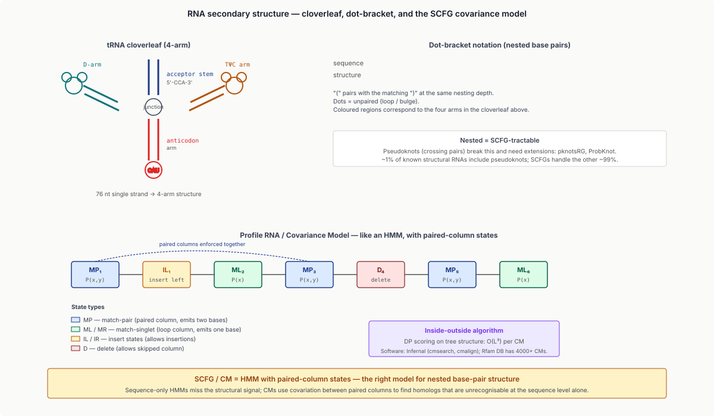
6.5.5 RNA tertiary structure
Beyond secondary structure, predicting full 3D coordinates of an RNA is much harder. Tools:
- RNAComposer, 3dRNA — fragment-assembly-based.
- AlphaFold2-RNA / RoseTTAFold-NA (2022-2023) — deep-learning extensions.
- AlphaFold 3 (2024) — handles RNA + DNA + protein + ligand jointly.
Accuracy is good for small structured RNAs (tRNA, riboswitches) but limited for large flexible lncRNAs.
Part 7 · 20 min Tools and Practice
7.1 The standard workflow
For a typical phylogenetics paper:
- Collect: gather homologous sequences (BLAST, OrthoFinder, manual curation).
- Align: MAFFT L-INS-i (or MUSCLE).
- Trim: Gblocks or trimAl removes poorly-aligned columns.
- Tree: IQ-TREE with model selection + 1000 bootstraps.
- Visualise: iTOL or FigTree.
- Selection: PAML / HyPhy if dN/dS is the question.
- Comparative: UCSC Browser if genome context matters.
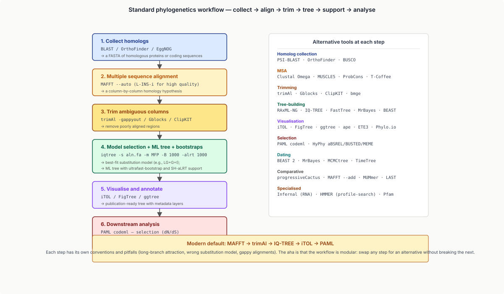
7.2 Common pitfalls
- Misaligned columns: a few badly-aligned positions will throw off the tree. Trim aggressively.
- Long-branch attraction: distantly-related fast-evolving sequences appear close. Add intermediates if possible; use ML.
- Saturated distances: at very high divergence, multiple substitutions per site cause distance underestimation. Use codon-aware methods for protein-coding alignments.
- Missing data: indels and gaps must be handled correctly (either removed or modelled).
- Wrong root: for unrooted trees, picking a root requires an outgroup; placing the root wrongly inverts ancestor relationships.
7.3 The tree of life
The Tree of Life (Hug et al. 2016, Nature Microbiology) is a ~3000-tip ML tree built from 16S rRNA + concatenated marker genes. It re-classified the bacteria-archaea-eukarya split, with archaea now placed as sister to eukaryotes (the "two domains" hypothesis). Comparative genomics underlies this entire reclassification.
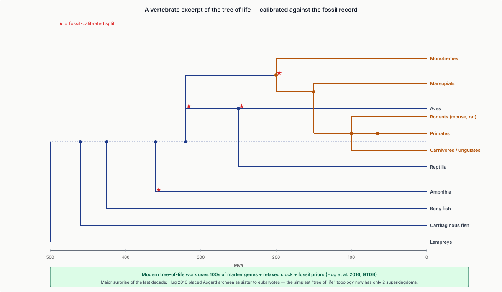
Wrap-up
What you should take away
- MSA is intractable in exact form; progressive alignment + iterative refinement (Clustal, MUSCLE, MAFFT) is the practical compromise.
- Phylogenetic trees can be inferred from distances (NJ), characters (parsimony), or likelihood (ML). ML is the gold standard.
- The molecular clock is a Poisson-process model; relaxed-clock variants handle real-world rate variation.
- dN/dS is a likelihood-ratio test for selection; $\omega > 1$ = positive selection, $\omega < 1$ = purifying.
- Comparative genomics uses synteny, orthologs, and conservation tracks to align genome organisation across species.
- RNA secondary structure is detected by SCFG-based profile models (Infernal / Rfam) — the RNA analog of profile HMMs.
- EE framings: trees as graphical models; MSA as constrained tensor DP; molecular clock as a Poisson process; dN/dS as a likelihood-ratio test; RNA folding as constrained context-free parsing.
Next lecture
Genome assembly (existing L3, becomes new L5): from reads to contigs to scaffolds. The MSA you just learned is what's used to validate assembly correctness via cross-sample comparison.
Homework
- Take 5 protein sequences from the same family (e.g., haemoglobin orthologs). Run MAFFT L-INS-i. Identify conserved positions. Trim to a 50-residue core domain.
- Build NJ and ML trees on the same dataset; compare topologies. Bootstrap 100×; report which branches are well-supported.
- Compute dN/dS for the alignment from #1 using codeml. Test the M0 vs M2a (positive selection) models. Report ω and p-value.
- From UCSC Browser, visualise the human-mouse synteny for a 1 Mb region of human chromosome 17. Identify a clear rearrangement; describe its inferred type (inversion, translocation).
- Run
cmsearchagainst Rfam on a 10 kb genomic region of your choice. Report all ncRNA family hits with E < 10⁻³.
Recommended reading
- Edgar, R. C. (2004). MUSCLE: multiple sequence alignment with high accuracy and high throughput. Nucleic Acids Research 32, 1792–1797.
- Katoh, K., & Standley, D. M. (2013). MAFFT multiple sequence alignment software version 7. Molecular Biology and Evolution 30, 772–780.
- Saitou, N., & Nei, M. (1987). The neighbor-joining method: a new method for reconstructing phylogenetic trees. Molecular Biology and Evolution 4, 406–425.
- Felsenstein, J. (1981). Evolutionary trees from DNA sequences: a maximum likelihood approach. Journal of Molecular Evolution 17, 368–376.
- Yang, Z. (2007). PAML 4: phylogenetic analysis by maximum likelihood. Molecular Biology and Evolution 24, 1586–1591.
- Hug, L. A., et al. (2016). A new view of the tree of life. Nature Microbiology 1, 16048.
- Nguyen, L. T., et al. (2015). IQ-TREE: a fast and effective stochastic algorithm for estimating ML phylogenies. Molecular Biology and Evolution 32, 268–274.
- Eddy, S. R. (2013). Computational analysis of conserved RNA secondary structure in transcriptomes and genomes. Annual Review of Biophysics 43, 433–456.
- Lorenz, R., et al. (2011). ViennaRNA Package 2.0. Algorithms for Molecular Biology 6, 26.
- UCSC Genome Browser: genome.ucsc.edu
- Ensembl Compara: ensembl.org/info/genome/compara
- iTOL: itol.embl.de
- IQ-TREE: iqtree.org
- Rfam: rfam.org
Appendix — timing summary
| Block | Time | Cumulative |
|---|---|---|
| Part 1 — From Pairwise to Multiple | 25 min | 0:25 |
| Part 2 — Progressive Alignment in Practice | 40 min | 1:05 |
| Part 3 — Phylogenetic Tree Construction | 40 min | 1:45 |
| Part 4 — Molecular Clock and Dating | 25 min | 2:10 |
| Part 5 — dN/dS and Selection | 25 min | 2:35 |
| Part 6 — Comparative Genomics and Synteny | 25 min | 3:00 |
| Part 6.5 — RNA Secondary Structure and ncRNAs | 25 min | 3:25 |
| Part 7 — Tools and Practice | 20 min | 3:45 |
| Wrap-up | 10 min | 3:55 |
Total: ~3h 55min of content.